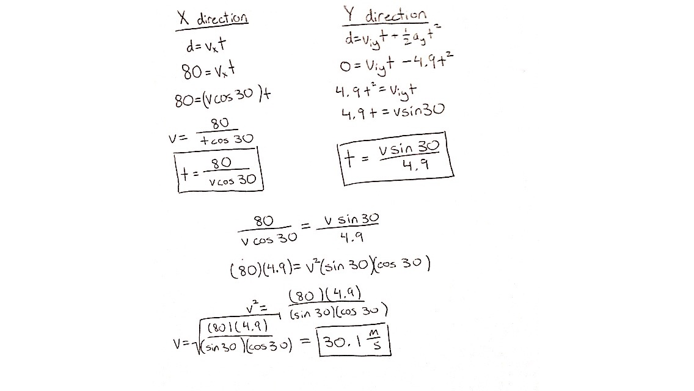

Newton's Third Law
Newton's Third Law states that "Every Action has an Equal and Opposite Reaction"
Lets break this down. An action refers to an application of force. If you push a ball, that is an action. When gravity pulls down a skydiver, that is an action. The reaction is essentially the action, but with the objets reversed. If the action is you pushing a ball, the reaction is the ball pushing you.
Have you ever fired a gun? Even if not, you're likely aware that recoil exists. Newton's third law tells us why recoil exists. When the bullet leaves the chamber, you (through the gun) exerted a huge force on the bullet to get it to speed up to high speeds. The reaction is that the bullet exerted a force on you.
The reaction is "equal and opposite", because it is equal in magnitude to the action force, and opposite in direction. If you throw a ball with 15N of force, the ball throws you in the opposite direction with a force of 15N. Even if a bicyclist were to crash into a school bus, she would exert the same force on the bus as the bus exerts on her.


Question: What happens to a cannon in space when it's fired at various angles?
This interactive program illustrates Newton's Third Law of motion. Click on the window, then use the left and right keys to rotate the cannon. Click anywhere on screen to fire, and click reset to reset the simulation.
The cannon moves in the opposite direction of the bullet. You may be wondering, "Why do the objects move away from the original position at different speeds, if the same force acts on them?" The reason is because each object has a different mass. Due to Newton's Second Law, we know that the same force will cause a greater acceleration on a less massive object.
Practice Problems
1. When you jump, your action is exerting a force on the ground. What is the reaction force? What is the magnitude of the reaction force?
2. A small car crashes into a stationary semitruck. The semitruck is four times as massive as the small. If the small car applies a 15,000N force on the semitruck, what is the magnitude and direction of the force that the semitruck applies on the small car?
3. A massive football player body slams a small, unsuspecting man. The football player is twice as massive as the smaller man. How does the resultant acceleration of the football player compare to the man?
4. If a 50kg parachuter is free falling on earth, what is the force that the man exerts on the earth?
5. A baseball player swings at the baseball, and the ball accelerates away at 40 meters per second. What is the force that the baseball exerts on the bat? Hint: look up values for the mass of a baseball and a baseball bat.
Practice Answers
1.
2.33 meters per second squared
Simply divide 7N by 3kg to find the acceleration, as stated by Newton's second law.
2.
1.66kg
Rearrange the equation to solve for mass. Divide force by acceleration.
3.
800N
Rearrange the equation to solve for force. This is where the famous "F = ma" comes in.
4.
280 meters per second squared
The minimum force to sustain a traumatic injury is 1400N, meaning we should consider this as the force. The mass of the head is 5kg, so we simply divide to find the acceleration. If this seems like alot, remember that it's the acceleration, not the velocity. Your head never travels at 280 meters per second, it just accelerates when the fist is in contact, which is only for a fraction of a second. Also, your head is attatched to your body (hopefully), so while your head would initially accelerate that fast, your body would keep your head from flying off.
5.
8000N
If a car experiences a change in velocity of 40 meters per second over 5 seconds, then it has an average acceleration of 8 meters per second squared. Now, we solve for the force using F = ma.
6.
3 meters per second to the left
A leftward 10N force is applied on a 5kg ball, so its resultant acceleration is 2 meters per second left. The force is applied for 4 seconds, so the change in velocity is 8 meters per second to the left (from v = at). Since the ball starts out going 5 meters per second to the right, and has a change in 8 meters per second to the left, it ends up going 3 meters per second to the left. (5 - 8 = -3)
7.
48.2N
We know the mass of the javelin, so we could solve for the force if only we knew the acceleration! Well, we know that the acceleration will equal the change in velocity of the javelin, divided by the time taken to throw it, because acceleration is how velocity changes with respect to time. We already know that the javelin is in contact with the hand for half of a second, so we just need to know the velocity of the javelin right as it leaves the hand. To solve this, we need kinematics. Set up a diagram.

Now this is a kinematics problem. Split the problem up into kinematics in the y direction, and kinematics in the x direction.

Since the velocity of the javelin started at zero, the change in velocity is just the final velocity, or 30.1 meters per second. Since the javelin was in contact with the hand for just half of a second, that means that the acceleration was 60.2 meters per second. Finally, we know the acceleration, and can calculate the force. F = ma, so F = (60.2)*(.8) = 48.2N. We use .8 instead of 800, because the mass needs to be in kilograms.
Back to Newton's Laws